Computational Plasma Physics
Fast-Ion Orbit Modeling in WHAM Fields
Summer 2026 • Ongoing research
I wrote a Python model to follow fast ions through WHAM magnetic fields and classify which particles stay confined, escape axially, or reach a radial boundary. I parallelized the orbit calculations on Swarthmore’s Firebird cluster. The largest run so far tracks 500,000 simulated 25 keV deuterium ions to study pitch-angle scattering and birth location.
Field interpolation, full-orbit integration, loss classification, validation, and plotting.
Full particle trajectories in axisymmetric Br(r,z) and Bz(r,z) fields exported from COMSOL.
High-resolution spatial, velocity-space, and 25 keV NBI scattering studies run on Firebird HPC.
Boris particle pusher, field interpolation, distributed parameter sweeps, pitch-angle scattering, weighted distributions, and plotting.
The confinement question
WHAM uses a magnetic-mirror geometry to confine plasma between regions of stronger magnetic field. Particles moving primarily along the field can stream through the mirrors, while particles with sufficient perpendicular velocity reflect and remain trapped. At higher energy, finite gyro-orbit size and the device geometry also open possible radial-loss pathways.
I sampled particle starting positions, velocities, and gyro phases, then classified each trajectory as confined, axially escaped, across a limiter-related flux surface, or across a hard radial boundary.
The animation below is only an illustration of a magnetic mirror. It does not use the WHAM field; the quantitative results on this page do.
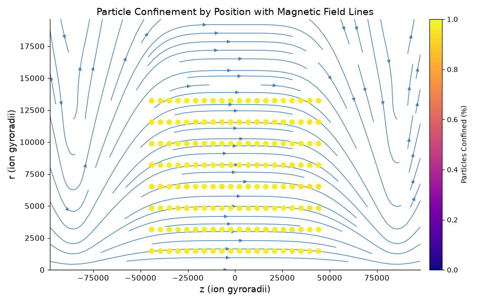
Building the orbit model
The field evaluator loads WHAM's axisymmetric radial and axial magnetic-field components, interpolates them at each particle location, and converts the result into Cartesian coordinates. A Boris pusher advances the full gyromotion under the Lorentz force while tracking position, velocity, energy, mirror bounces, and boundary crossings.
The same integrator handles starting-position scans, pitch-angle studies, velocity-space sweeps, and weighted distributions. A separate classifier records the different loss outcomes.
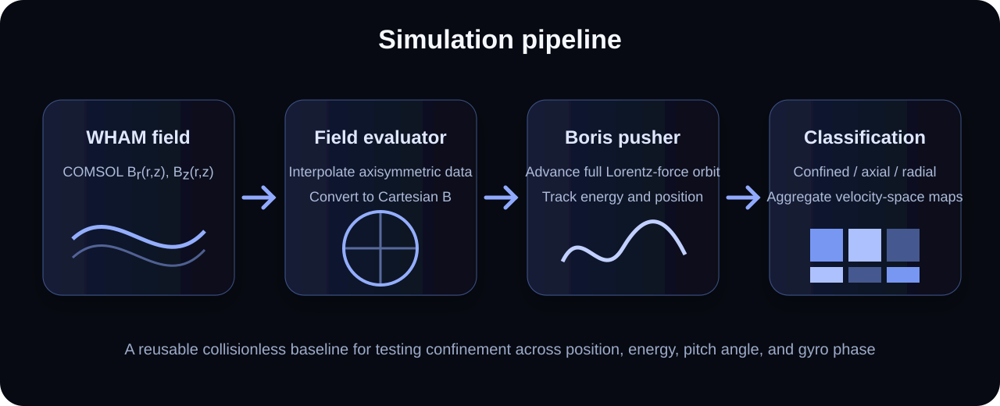
Field evaluation
Interpolate Br and Bz on the WHAM grid and recover the Cartesian field at arbitrary particle positions.
Orbit integration
Advance full particle gyromotion with the Boris algorithm rather than relying only on a guiding-center approximation.
Classification
Separate confined particles from axial escape, hard radial loss, limiter-surface crossing, and unresolved cases.
Population analysis
Repeat across v⊥, v∥, position, and gyro phase, then weight the outcomes with a physical source distribution.
Running large particle scans
Individual orbits are useful for debugging, but confinement depends on the distribution of starting conditions. Each trajectory is independent, so I ran the larger sweeps in parallel on Firebird and combined the results into maps.
The production studies now include a 41,310-orbit spatial birth-location scan (81 axial positions × 51 radial positions × 10 samples), 65,600 velocity-space integrations across two boundary/source cases, and a 500,000-particle 25 keV NBI scattering scan. Together, these studies have pushed the model past 600,000 full-orbit integrations in the actual WHAM field geometry.
High-resolution sampling across axial and radial birth location, with 10 samples at each grid point.
Two 41 × 80 velocity grids with 10 samples per bin, used to compare source and radial-boundary definitions.
Four scattering strengths across a simplified 25 keV neutral-beam source, distributed over 512 compute chunks.
Checking the model
Before running the large scans, I checked the expected magnetic-mirror loss cone and repeated tests with smaller timesteps and longer run times. Field-aligned particles escaped more often, with the trapped/passing boundary following the theoretical trend.
The validated collisionless runs conserved energy to approximately one part in 1013. That check matters: even small numerical energy drift could change which orbits appear trapped or lost.
Maximum fractional energy error in the current validated collisionless runs.
Current pilot sweeps, consistent with the expected magnetic-mirror loss cone.
The classifier resolves a population rather than a single representative orbit.
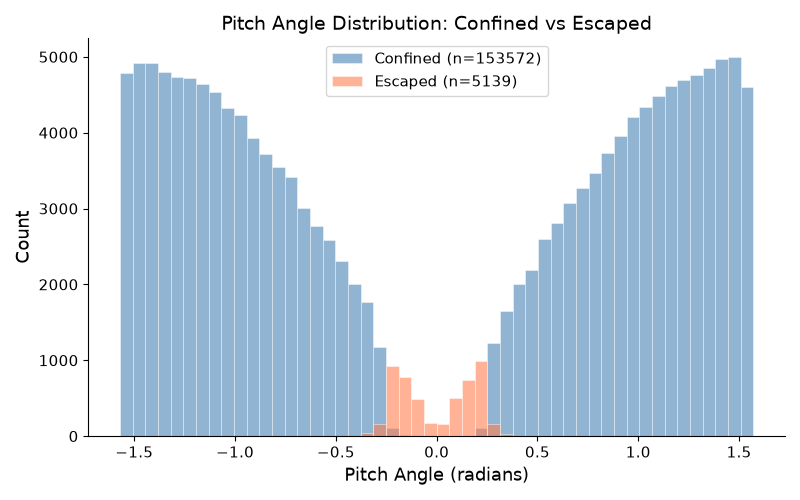
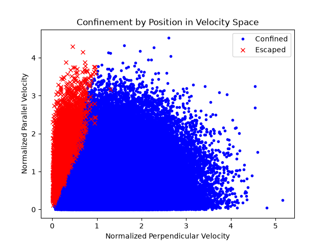
Pitch-angle scattering at 25 keV
To move beyond the collisionless baseline, I added pitch-angle scattering and launched 25 keV D+ ions from a simplified neutral-beam source: a uniform 50 cm × 8 cm × 8 cm prism following a 45° injection path toward the central cell. I swept normalized scattering values ν = 0, 10−5, 10−4, and 10−3 across 500,000 particles. All 512 compute chunks completed with zero unresolved outcomes.
The scattering strength made a large difference. With ν = 0, 74.0% of particles remained confined, 26.0% hit the hard radial boundary, and essentially none escaped axially. At ν = 10−4, 51.4% remained confined. At ν = 10−3, confinement dropped to 8.1%, with 62.9% lost radially and 29.0% escaping axially.
High-statistics 25 keV D+ neutral-beam population.
Collisionless through ν = 10−3, using the same source and field geometry.
All 512 distributed compute chunks completed successfully.
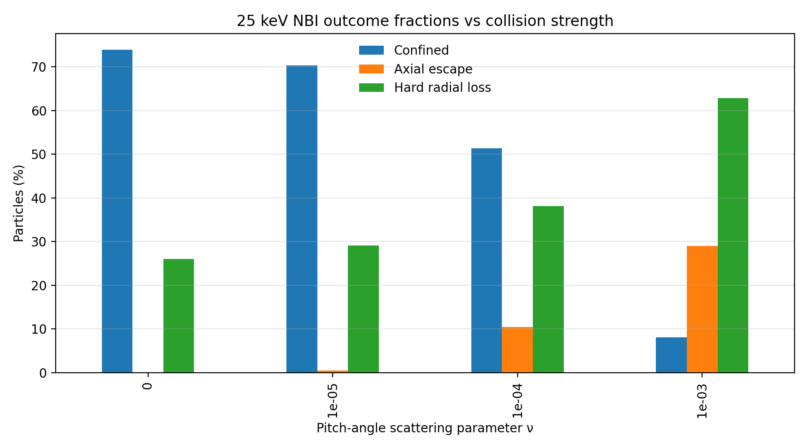
Where the ions start
Birth location mattered too. Without scattering, ions born near the central-cell target were nearly all confined, while those born farther upstream were mostly lost radially. Stronger scattering reduced confinement even for ions born closer to the center.
The source geometry therefore changes the result. The scattering parameter ν is still normalized, though; I have not yet calibrated it to a physical collision frequency for WHAM.
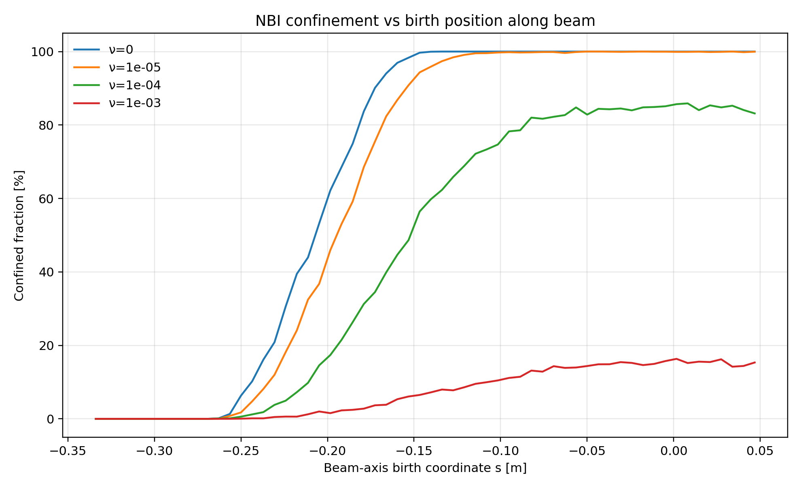
Choosing the radial boundary
The radial boundary definition changed the result dramatically. A cylindrical hard wall marked 19% of a pilot population as radially lost. Using the WHAM limiter-related flux surface instead reduced that inferred loss to below 1% for the same scan.
A particle can cross a geometric radius during its gyro-orbit without necessarily being lost from the confined region. I now track limiter-surface crossing separately from hard radial loss.
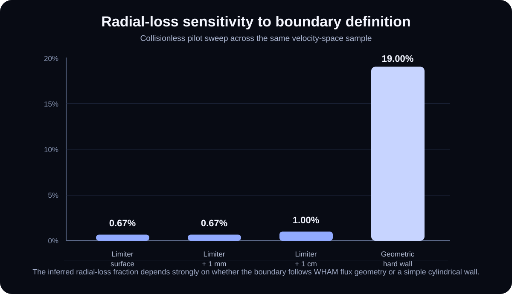
View the detailed boundary and velocity-space figures
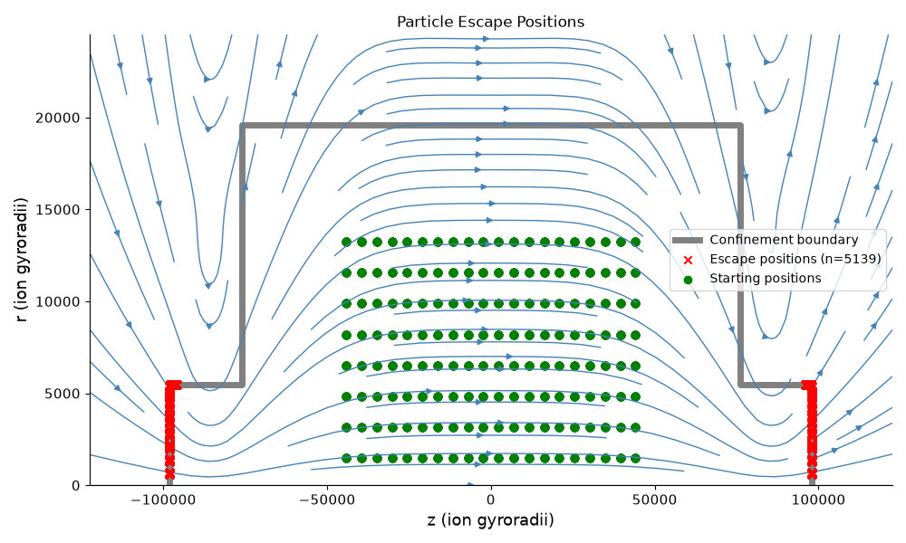
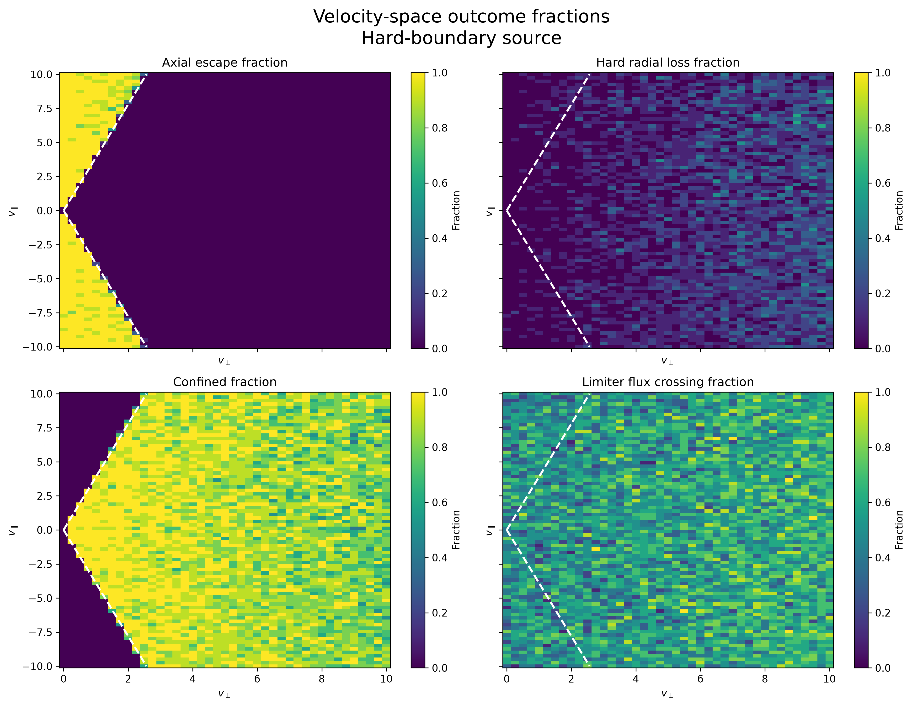
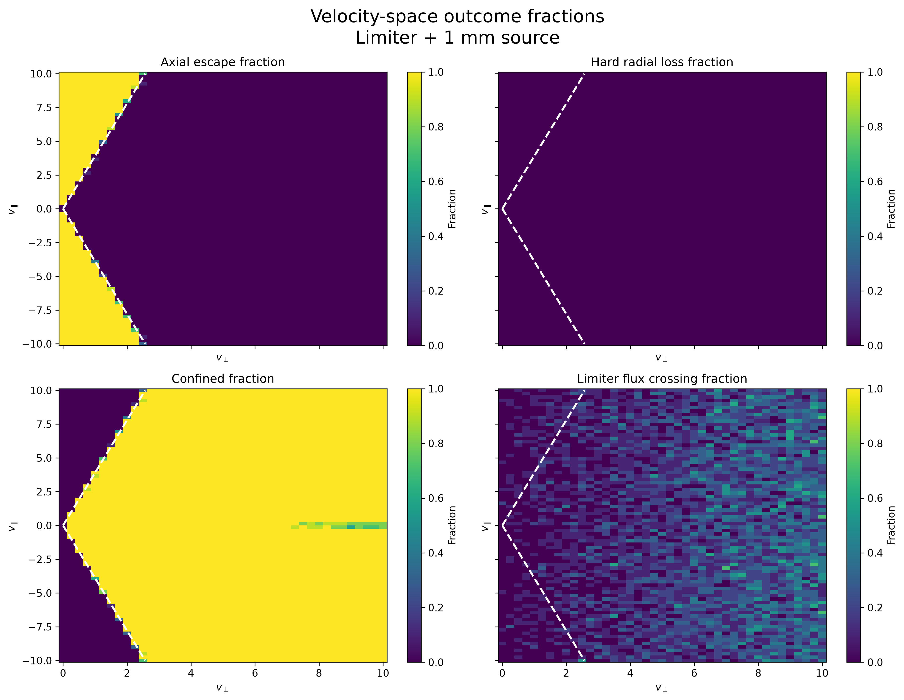
The figures can be opened at full resolution for axis labels and individual velocity-space bins.
Weighting the results
A uniform grid of starting velocities is not the same as a physical ion population. I weighted the outcomes with normalized F(v⊥,v∥) source distributions to show the confined and lost components together in velocity space.
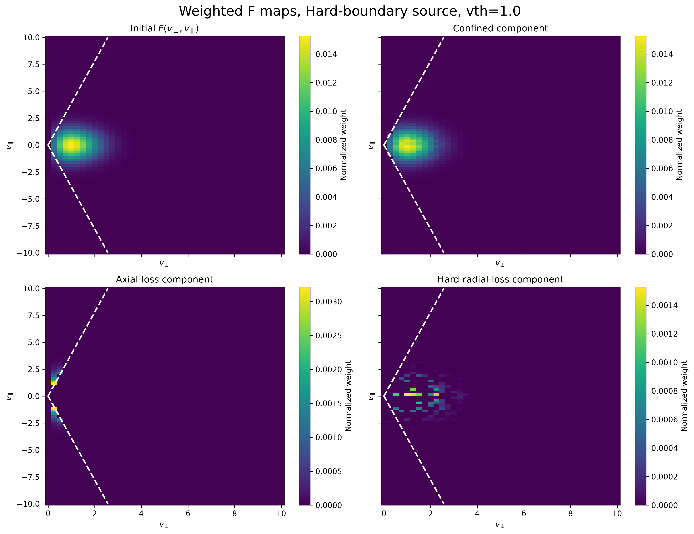
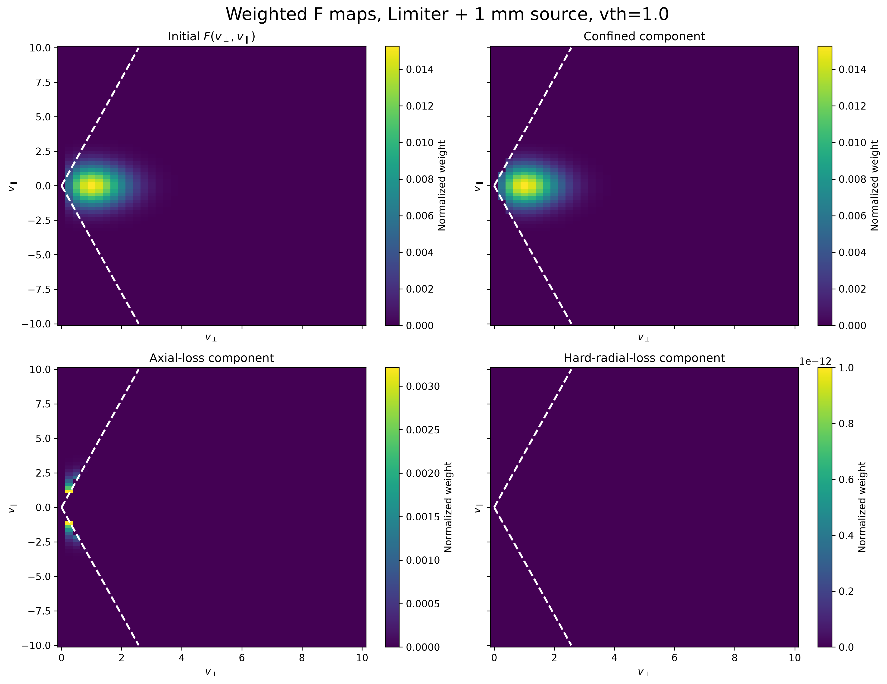
Next steps
The 25 keV scan shows how sensitive confinement is to scattering, but ν is still a normalized parameter, not a physical collision rate. I want to validate the scattering operator, connect it to collision timescales, and use it in weighted-source and charge-exchange calculations.
Near term
- Calibrate ν against physical collision timescales
- Verify timestep and scattering-operator convergence
- Fold scattering into weighted F(v⊥,v∥) populations
Longer term
- Refine neutral-beam source geometry and weighting
- Calculate charge-exchange loss directions and magnitudes
- Evaluate electric-field and Pastukhov-potential effects